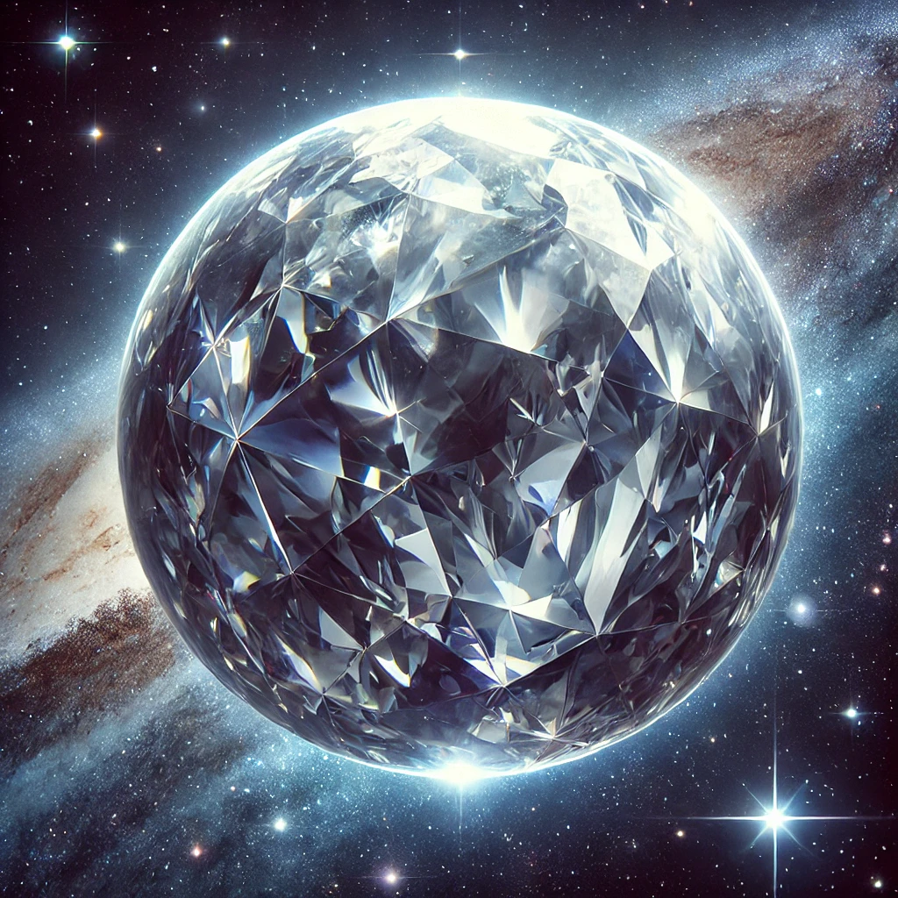

Planeta Diamante

Existe um planeta chamado 55 Cancri e, que é basicamente um gigante de carbono, possivelmente revestido de diamante cristalizado. Ele possui duas vezes a massa de Júpiter, mas é menor em tamanho.
A alta pressão em seu núcleo transforma o carbono em diamante, tornando-o um dos planetas mais valiosos do universo.
As temperaturas são extremamente altas, chegando a milhares de graus Celsius, o que cria uma superfície de lava e rochas exóticas.
Este planeta desafia nossa ideia do que pode existir fora do Sistema Solar, mostrando que mundos alienígenas podem ser completamente diferentes da Terra.